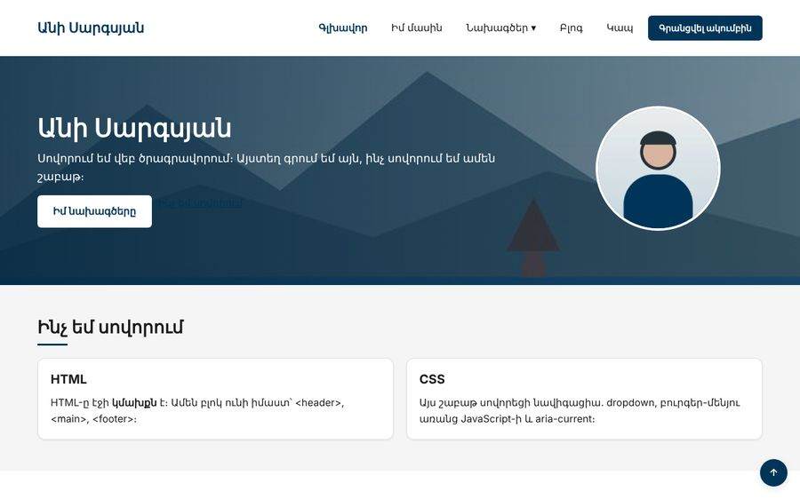
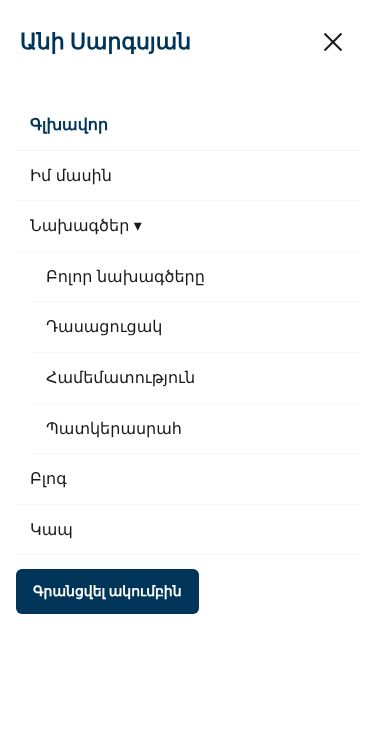

Տնային աշխատանք · HTML Դաս 18 · մինի-նախագիծ
Header-ը դառնում է ամբողջական նավիգացիա՝ aria-current, dropdown :focus-within-ով և բուրգեր-մենյու առանց JavaScript-ի։
Օգտագործիր միայն Դաս 01–18-ը։ Բուրգերը աշխատում է checkbox-ով․ Esc-ով փակելը և մյուս պահանջները JavaScript են։
Header-ը դառնում է սպիտակ և կոմպակտ՝ dropdown-ով և կոճակով։ Հեռախոսում մենյուն թաքնված է բուրգերի տակ և աշխատում է առանց JavaScript-ի։


Սկսիր Դաս 17-ի քո կայքից։ Եթե այն չունես, վերցրու Դաս 17-ի օրինակը։
<header class="header">
<input type="checkbox" id="nav-toggle" class="nav-toggle">
<div class="row align-center justify-between">
<div class="col">
<a href="index.html" class="logo">Անի Սարգսյան</a>
</div>
<div class="col">
<label for="nav-toggle" class="burger">
<span></span><span></span><span></span>
<span class="visually-hidden">Մենյու</span>
</label>
<nav aria-label="Գլխավոր մենյու">
<ul class="menu flex align-center gap-10">
<li><a href="index.html" aria-current="page">Գլխավոր</a></li>
<li><a href="pages/about.html">Իմ մասին</a></li>
<li class="has-sub">
<a href="pages/projects.html">Նախագծեր <span aria-hidden="true">▾</span></a>
<ul class="submenu"> ... </ul>
</li>
<li><a href="pages/blog.html">Բլոգ</a></li>
<li><a href="pages/contact.html">Կապ</a></li>
<li><a href="pages/register.html" class="btn btn--primary btn--sm">Գրանցվել ակումբին</a></li>
</ul>
</nav>
</div>
</div>
</header>Ջնջիր բոլոր class="is-active"-երը և դրանց փոխարեն գրիր aria-current="page"։ Ոճը՝ ատրիբուտով սելեկտորով (Դաս 06)․ .menu a[aria-current="page"]։ Մեկ ատրիբուտ, երկու օգուտ․ էկրանընթերցիչը ասում է «ընթացիկ էջ», իսկ CSS-ը ոճավորում է առանց լրացուցիչ դասի։
.has-sub { position: relative; }
.submenu {
position: absolute;
top: calc(100% + 4px);
left: 0;
opacity: 0;
visibility: hidden; /* display: none-ը չի անիմացվում */
transform: translateY(-6px);
transition: opacity .15s, transform .15s, visibility .15s;
}
.has-sub:hover .submenu,
.has-sub:focus-within .submenu { /* ստեղնաշարի համար */
opacity: 1;
visibility: visible;
transform: translateY(0);
}Ջնջիր :focus-within-ը և անցիր մենյուն Tab-ով։ Ենթամենյուի հղումները ստանում են ֆոկուս, բայց չեն երևում։ Վերադարձրու։
/* Համակարգչում */
.nav-toggle { display: none; position: absolute; opacity: 0; }
.burger { display: none; }
@media (max-width: 768px) {
.burger { display: flex; }
.nav-toggle { display: block; }
.menu {
position: fixed;
top: var(--header-h);
left: 0;
right: 0;
bottom: 0;
flex-direction: column;
transform: translateX(100%);
visibility: hidden; /* փակ մենյուի հղումները Tab-ի հերթում չեն */
}
.nav-toggle:checked ~ .row .menu {
transform: translateX(0);
visibility: visible;
}
.nav-toggle:checked ~ .row .burger span:nth-child(1) { transform: translateY(7px) rotate(45deg); }
.nav-toggle:checked ~ .row .burger span:nth-child(2) { opacity: 0; }
.nav-toggle:checked ~ .row .burger span:nth-child(3) { transform: translateY(-7px) rotate(-45deg); }
}~ սելեկտորը գտնում է միայն հետագա եղբայրներին։ Checkbox-ը և .row-ը header-ի երեխաներ են, ուստի .nav-toggle:checked ~ .row .menu-ը հասնում է մենյուին, որքան էլ այն խորը լինի .row-ի ներսում։
Ուշադրություն․ ul-երն ունեն margin-bottom: 16px, և fixed մենյուն կկարճանա 16px-ով։ Տուր .menu-ին margin-bottom: 0։
Անցիր ամբողջ էջը միայն ստեղնաշարով 1280px-ում և 375px-ում։ Հեռախոսում բուրգերը բացվում է Space-ով։ Գրիր հինգ բան, որ CSS-ի տարբերակը չի կարող անել (Esc, դրսում սեղմել, հղմանը սեղմելուց հետո փակվել, ...)։ Դրանք JS բլոկում են։
aria-current, ոչ դասvisibility-ով և անիմացվում է| Սխալ | Ինչպես ուղղել |
|---|---|
| Բուրգերը սեղմվում է, բայց մենյուն չի բացվում | Checkbox-ը .row-ից առաջ չէ, կամ for-ը և id-ն տարբեր են |
| Dropdown-ը փակվում է, երբ մկնիկը տանում ես դեպի ենթամենյու | Ենթամենյուի և հղման միջև մեծ բացակ կա |
| Համակարգչում Tab-ը կանգ է առնում անտեսանելի տարրի վրա | Checkbox-ը տեսանելի չէ, բայց ֆոկուս է ստանում։ Համակարգչում՝ display: none |
| Մենյուի պանելը չի հասնում ներքև | ul-ի margin-bottom-ը |
Սրանք Դաս 18-ի տնային աշխատանքի կետերն են։ «մինի-նախագծում» նշվածները արդեն կատարել ես վերևի քայլերում, մնացածը կատարիր առանձին ֆայլերում կամ նույն թղթապանակում։
aria-current="page"։ Ցուցադրիր, ինչպես ես ոճավորում այն առանց լրացուցիչ դասի։ մինի-նախագծում:focus-within-ը և նկարագրիր, ինչ կորավ։ մինի-նախագծումdisplay: none-ը և visibility: hidden + opacity-ը dropdown-ի համար։ Ո՞րն է անիմացվում։ մինի-նախագծումԵրբ բաժին 03-ի բոլոր կետերը նշված են, բացիր օրինակը և քո էջը կողք կողքի։ Բացիր երկուսի կոդն էլ խմբագրիչում։ Գտիր մեկ բան, որ դու արել ես այլ կերպ, և մտածիր՝ որն է ավելի հասկանալի և ինչու։ Քո լուծումը կարող է տարբերվել և լինել ճիշտ։